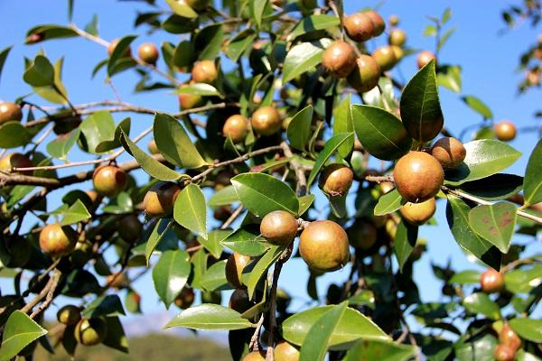
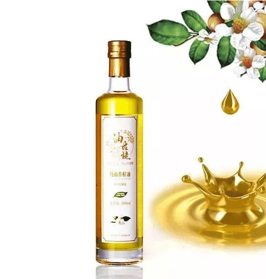

随着物质文化生活水平的提高
人们对健康的关注程度越来越高
山茶油越来越受到更多人的认识
因此大家开始慢慢了解“油古姥”山茶油的好处
现在，小昌君为大家科普一下

山茶油是什么？
山茶油是由山茶果提炼而成的食用油，又名油茶籽油、山茶油，是从山茶科山茶属植物的普通油茶成熟种子中提取的纯天然高级食用植物油。油茶树生长在没有污染的亚热带南岭湿润气候区。整个生长过程中不施农药、化肥等，不含芥酸、胆固醇、黄曲霉素等对人体有害物质。优质的山茶油色泽金黄或浅黄，品质纯净，澄清透明，气味清香，味道纯正。
看到这里
大家对山茶油的了解是不是更加深刻了
相信很多人都不知道“油古姥”山茶油的吃法
注意！注意！注意！
让小昌君带你们了解一下

“油古姥”山茶油怎么吃
1
凉拌：普通的食用油在不加热至熟的情况下，不能直接用于凉拌，而“油古姥”山茶油不需要加热的情况下，可直接用于凉拌各种荤、素菜，还可以调制色拉酱，具有色泽鲜亮、口味爽滑、清淡、不油腻等特点。
2
热炒：营养专家指出“热锅冷油”的烹调方式是保证菜品色、香、味和营养的正确方法。用“油古姥”山茶油热炒食物不发黑，清爽可口，不油腻。
3
煎炸：煎炸食物时，普通食用油在高温下会产生过氧化物，对人体极为有害。而“油古姥”山茶油含有抗氧化物（维E），可以在220度高温连续油炸20小时不变质，不产生反式脂肪酸，品质也不会发生改变，是健康的食用油。
4
烘烤：在烘烤前或烘烤时涂抹一层“油古姥”山茶油，可以保持食物鲜香酥脆，口感爽滑，不易糊焦。
5
汤菜：在煮汤时或煮汤后加入一匙“油古姥”山茶油，使汤更清鲜味美。